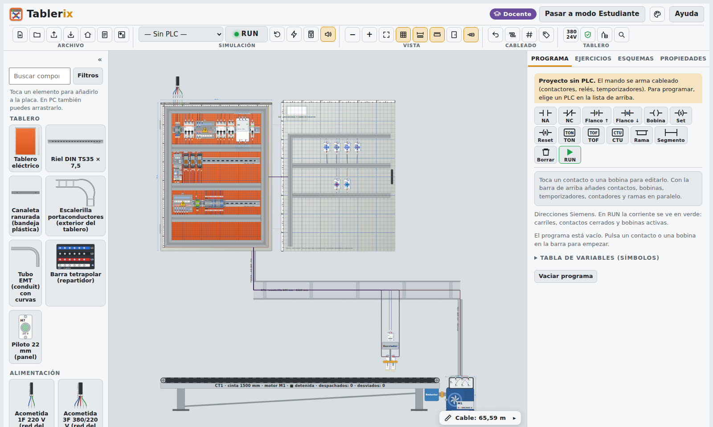

Montaje
Arma el tablero como en el taller
- Gabinete, placa, rieles DIN y canaletas con medidas reales en milímetros.
- Protecciones, contactores, relés, borneras y barras tetrapolares sobre el riel.
- Grilla, ajuste magnético y cotas en vivo para ubicar cada equipo.
